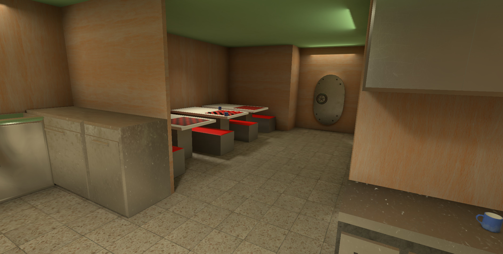

Demo
A short video demomstrating some features of the submarine.
Gallery
Some images taken from the project
Click on them to make bigger





The Albacore Submarine is a decommissioned military vessel that served from 1953 to 1972, and has since been converted into a museum exhibit. The goal for this project was to create a virtual reality tour of the submarine using an Oculus Quest 2 VR headset, with the intention of providing an accessible experience for those who may not be able to physically tour the submarine due to disabilities or other restrictions. The final product will be integrated as an attraction at the museum, with designated stations for using the VR equipment. To create this virtual reality experience, We used Unity, a game engine that allows for the creation of 3D environments and scripting in C#. This enables the simulation of the submarine's appearance and functionality in a virtual space. Additionally, the VR experience includes motion control capabilities and interactive objects within the environment, allowing users to interact with features such as switches and controls. Creating the virtual experience also required the creation of various assets, such as machinery, instruments, and the layout of the submarine itself. These assets were designed using Blender, a 3D modeling software, and include items such as gauges, buoys, and a replica of the submarine's exterior. Overall, the project aims to provide an immersive and interactive experience that brings the Albacore Submarine to life for users who may not have the opportunity to see it in person.
A short video demomstrating some features of the submarine.
Some images taken from the project
Click on them to make bigger